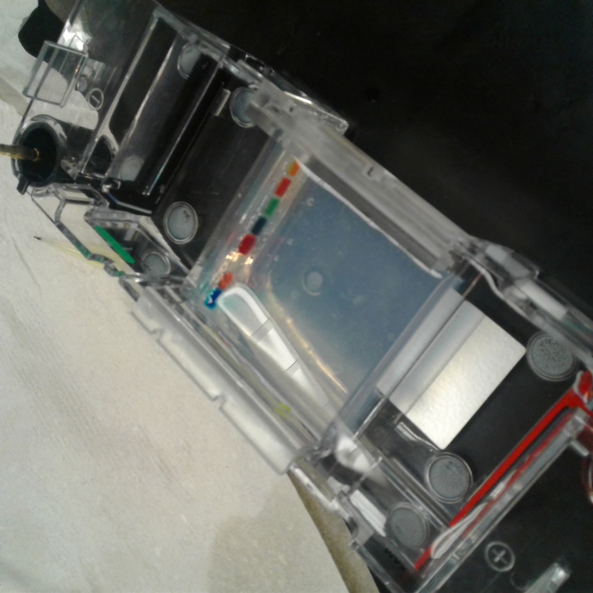

Biotechnology Projects
PCR and Gel Electrophoresis
This lab started off with kool-aid. We had used it as a substitute for actual lambda DNA on account of how expensive it was and how inexperienced we were. After the first trail that effectively served as a proof of concept, we moved on to actual DNA. We were taught about how DNA which is negatively charged. It moves toward the positive end of the circuit when suspended in the agarose gel and how the speed at which it moves is dictated by the size of the cuts. After that, the process of PCR was tacked on in our third attempt and we learned how to use a small strand of DNA to create millions of replica strands and then find out the length using Gel electrophoresis.
Showcase Project

Bacteria Culturing and Identification

In this lab, we studied different streaking methods and which were to be used when. We also learned to use entrotubes along with making and using different types of agar to identify various strains of bacteria. After that, we practiced the various streaking techniques and saw which ones yielded the best results.
Carrot Cloning Lab

We started this lab off with a bunch of carrots that we sterilized with bleach. After that, we used a hollow tube to extract an uncontaminated sample and put it in a nutrient-rich agar with hormones to stimulate cell division. After a few months, the tissue samples became large calluses that were ready to differentiate. At this point, we added hormones to make the carrot cells differentiate.
Anthrax Lab

We had this lab during our epidemiology unit. In an attempt to show us how quickly pathogens move from one host to another the teachers used an invisible powder that only shows under a blacklight and let us all learn our epidemiology class for an hour and a half. Afterward, they told us about the powder and showed us how much we all touched our faces, nose and eyes.